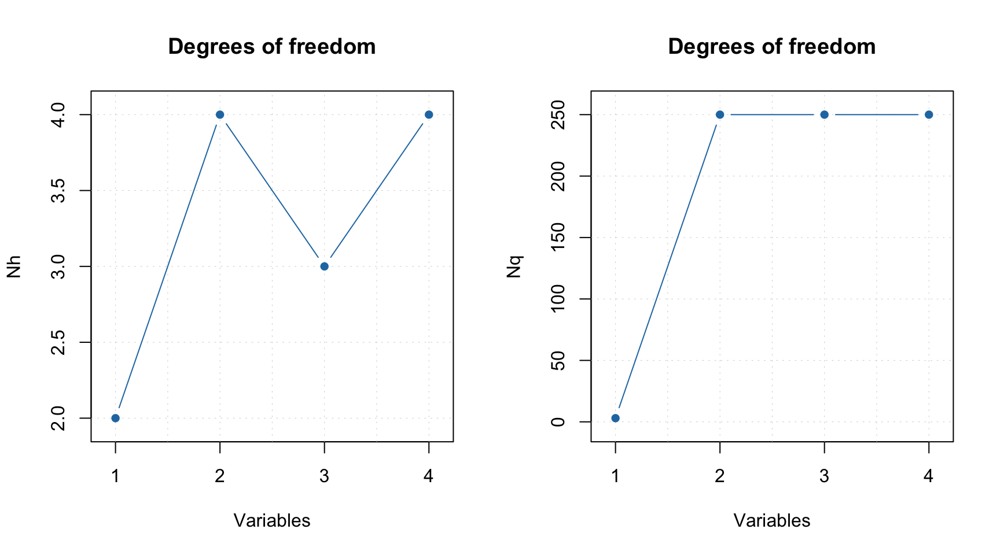
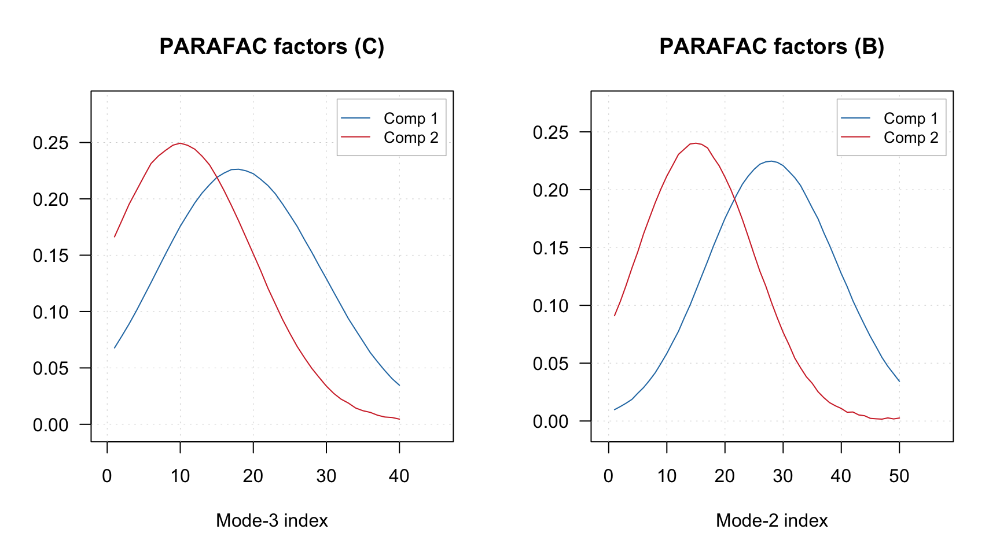
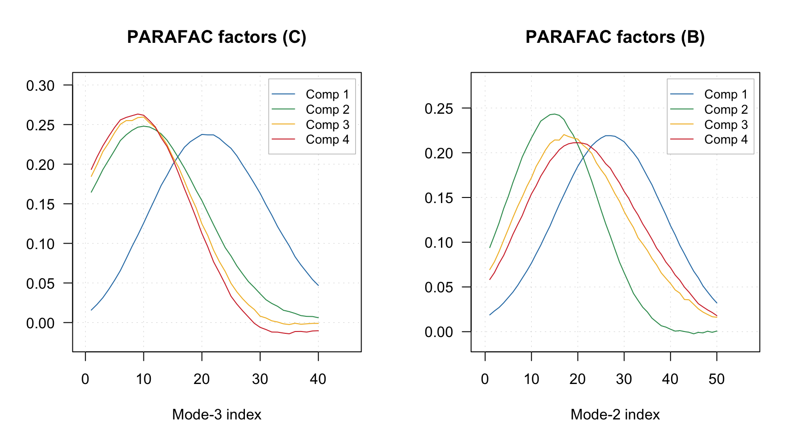
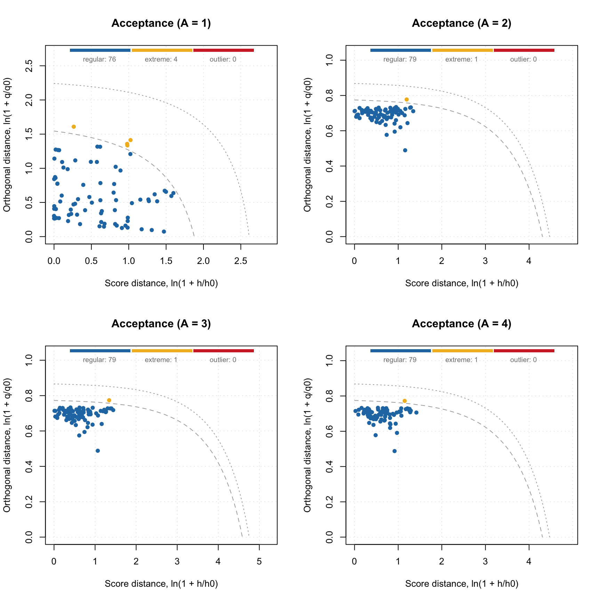
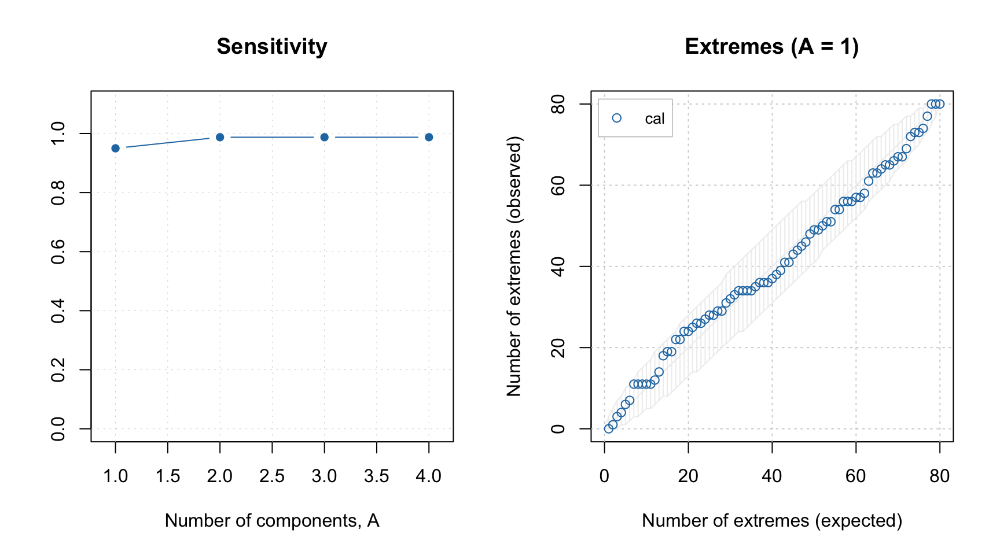
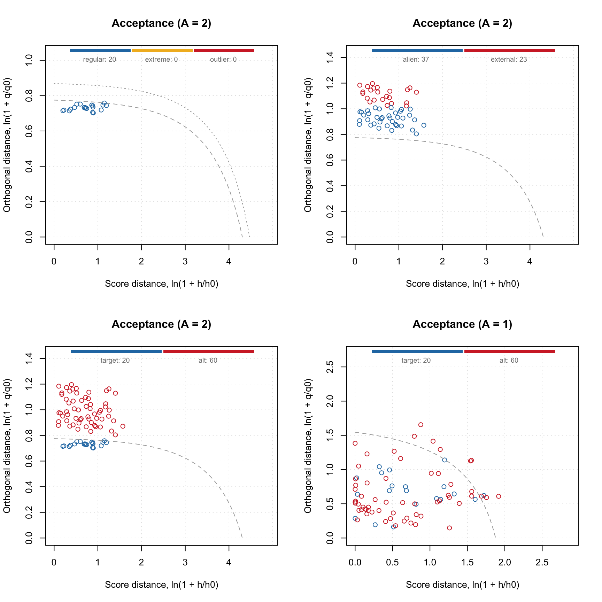
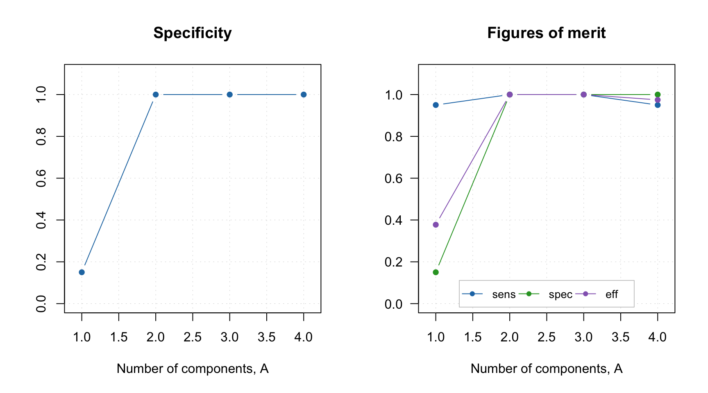
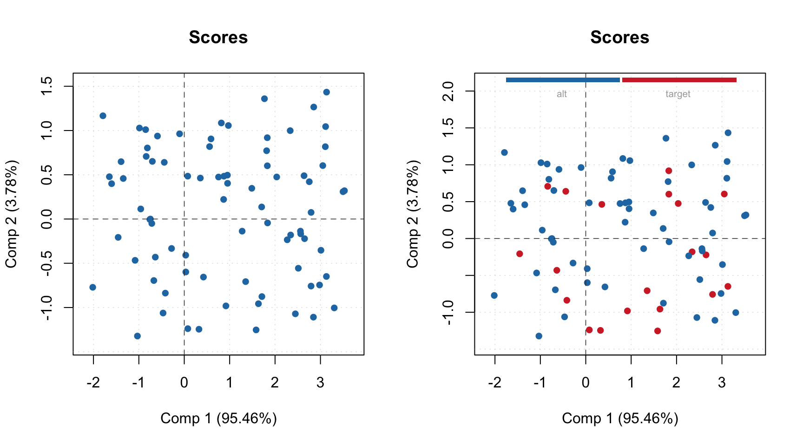

PARAFAC DD-SIMCA
Training a PARAFAC DD-SIMCA model is similar to training a conventional DD-SIMCA model, with one additional argument — you either need to provide 3-way data or provide 2-way data and the dimensions of the sample matrix (in our case \(50\times40\)):
Let’s start with 3-way:
##
## DD-SIMCA-PARAFAC model for class 'target' (50 x 40)
##
## Number of components: 4
## Number of selected components: 4
## Alpha: 0.05
## Gamma: 0.01
##
## Expvar Cumexpvar In Out TP FN Sens
## Cal 0.001243 99.51 79 1 79 1 0.9875Now the same but with 2-way data and additional argument:
##
## DD-SIMCA-PARAFAC model for class 'target' (50 x 40)
##
## Number of components: 4
## Number of selected components: 4
## Alpha: 0.05
## Gamma: 0.01
##
## Expvar Cumexpvar In Out TP FN Sens
## Cal 0.001781 99.51 79 1 79 1 0.9875As you can see the result is the same. A small discrepancy for explained variance of the last component is due to random initialization of the PARAFAC algorithm and also because our model is overfitted (there are 2 pure components in the data).
There is an important difference from conventional PCA-based DD-SIMCA. In the case of conventional DD-SIMCA training, providing ncomp = 4 will result in a model based on a single PCA decomposition (a single PCA model) with 4 components. In the case of PARAFAC, it will train four different models: the first PARAFAC model will use 1 component (1 factor), the second model — 2 components (factors), and so on.
Therefore, when we run the code above, R makes four models, and the models with 3 and 4 components are overfitted. You can see the effect of overfitting if you add argument verbose = TRUE when training. In this case the PARAFAC algorithm for models with 3 and 4 components cannot converge and you will see a corresponding message:
## ncomp = 3: parafac.als reached max iterations (500) before converging## ncomp = 4: parafac.als reached max iterations (500) before convergingHere are the statistics for calibration set:
##
## DD-SIMCA results
##
## Target class: target
## Number of components: 4
## Number of selected components: 4
## Type of limits: classic
## Alpha: 0.050
##
## Number of objects: 80
## - target class members: 80
## - from non-target classes: 0
## - from unknown classes: 0
##
## Expvar Cumexpvar In Out TP FN Sens
## Comp 1 95.648972 95.65 76 4 76 4 0.9500
## Comp 2 3.862370 99.51 79 1 79 1 0.9875
## Comp 3 0.001884 99.51 79 1 79 1 0.9875
## Comp 4* 0.001266 99.51 79 1 79 1 0.9875As you can see, there is further evidence that the model with 2 components is enough. By default, the last model (with 4 components in our case) is considered optimal. We can change this by using method selectCompNum():
##
## DD-SIMCA-PARAFAC model for class 'target' (50 x 40)
##
## Number of components: 4
## Number of selected components: 2
## Alpha: 0.05
## Gamma: 0.01
##
## Expvar Cumexpvar In Out TP FN Sens
## Cal 3.862 99.51 79 1 79 1 0.9875Like in conventional DD-SIMCA you can look at the number of degrees of freedom.

Again, it is important to underline that both Nh and Nq values are related to different PARAFAC models. Thus one can see that for the PARAFAC model with 2 components/factors, Nq is 250. It is the largest possible value because 2 components explain all systematic variation in the training data, so there is nothing left for the residual distance. Any model with number of factors > 2 will demonstrate similar behaviour.
The degrees of freedom for the full distance, \(N_f\), are computed differently here. There are two options - either use the same approach as in conventional DD-SIMCA (\(N_f = N_h + N_q\)). Or compute \(N_f\) based on statistics of the full distance distribution, the same way as \(N_q\) and \(N_h\) are computed. By default the last method is used, but you can change it by setting the argument nf.as.sum = TRUE.
Another difference is that there is no plotLoadings() method in this case, but you can show the B and C factors instead:

We see two partially overlapped Gaussian curves used for simulation of the data.
This method shows factors only for the optimal PARAFAC model (selected using selectCompNum() method). If you want to see factors for the PARAFAC model with 4 components, you need to select it first:
m <- selectCompNum(m, 4)
par(mfrow = c(1, 2))
plotFactors(m, comp = 1:4, "C")
plotFactors(m, comp = 1:4, "B")
Let’s get back to the optimal model.
Like in conventional DD-SIMCA, to get the results, you need to apply this model to a dataset. However, the results for the training set are already part of the model, as with any other method in the mdatools package. Procrustes cross-validation is not available for 3-way methods yet though.
Let’s check the acceptance plot for the training set using different models. Although the model now knows that the decomposition with 2 components is optimal and should be used as default, the distance values and the acceptance limits are still computed for all models, so we can show the acceptance plot for models with different numbers of components/factors.

And, like in conventional DD-SIMCA, we can of course show sensitivity and extreme plots.

Like in most of the mdatools methods, to get results for a new dataset, you need to use method predict(). Here is how to do it for the combined test set:
##
## DD-SIMCA results
##
## Target class: target
## Number of components: 4
## Number of selected components: 2
## Type of limits: classic
## Alpha: 0.050
##
## Number of objects: 80
## - target class members: 20
## - from non-target classes: 60
## - from unknown classes: 0
##
## Expvar Cumexpvar In Out TP FN Sens TN FP Spec Sel Acc Eff
## Comp 1 95.45842 95.46 70 10 19 1 0.95 9 51 0.15 0.02427 0.3500 0.3775
## Comp 2* 3.77964 99.24 20 60 20 0 1.00 60 0 1.00 0.99846 1.0000 1.0000
## Comp 3 0.13615 99.37 20 60 20 0 1.00 60 0 1.00 0.99930 1.0000 1.0000
## Comp 4 -0.01752 99.36 19 61 19 1 0.95 60 0 1.00 0.99958 0.9875 0.9747Most of the settings from conventional DD-SIMCA, such as selection of alpha and gamma values, will work here as well.
Here are different acceptance plots for the test set predictions.
par(mfrow = c(2, 2))
plotAcceptance(r.test, pch = 1, log = TRUE)
plotAcceptance(r.test, pch = 1, log = TRUE, show = "strangers")
plotAcceptance(r.test, pch = 1, log = TRUE, show = "all")
plotAcceptance(r.test, pch = 1, ncomp = 1, log = TRUE, show = "all")
And the figures of merit.

One can also show a plot with PARAFAC scores, but they are shown only for the optimal model.

And of course convert the DD-SIMCA results to a data frame:
## class role decision h/h0 q/q0 f
## 1 target regular in 1.1043853 1.069744 271.8536
## 2 target regular in 2.1575837 1.134071 292.1480
## 3 target regular in 0.6802476 1.120346 282.8076
## 4 target regular in 0.2506432 1.050417 263.6068
## 5 target regular in 0.4541723 1.061343 267.1525
## 6 target regular in 0.5986852 1.081811 272.8476